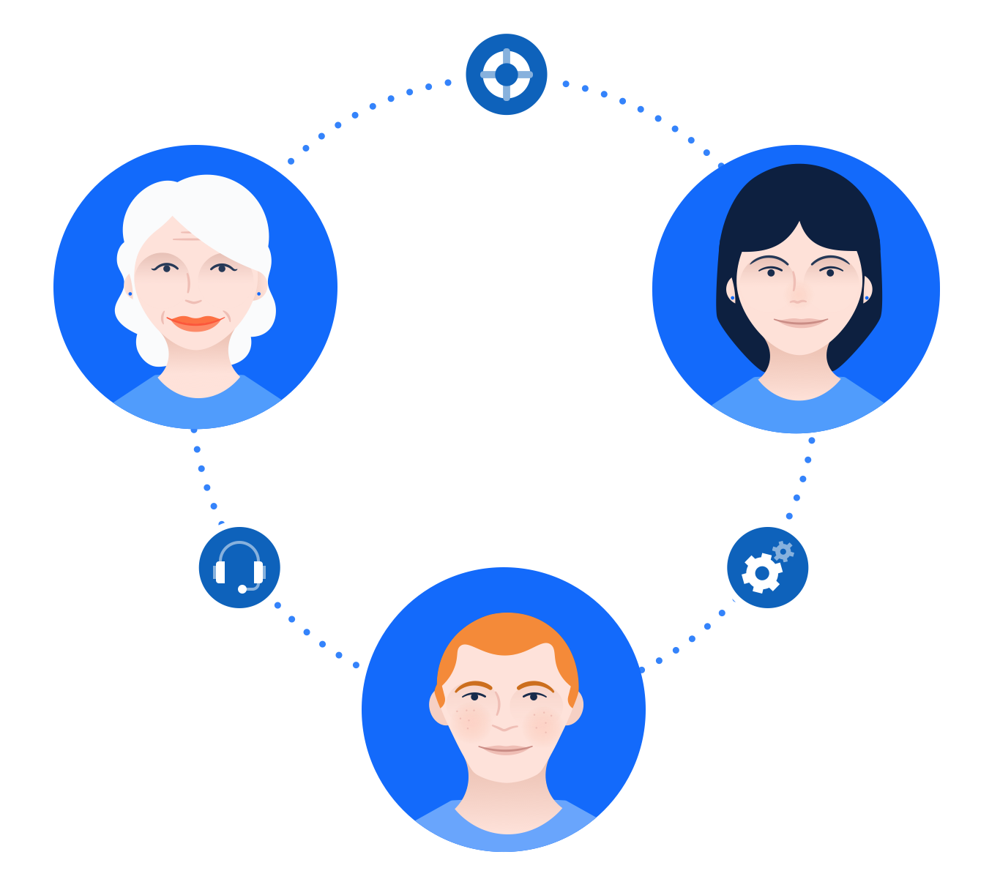

Teams That Use StatusPage

Support Teams
Support teams use StatusPage to deflect tickets during downtime. Don't leave your customers in the dark - use StatusPage to let them know when you'll have things fixed for them.
Devops Teams
Pipe your performance metrics and system status into StatusPage so your team has a dedicated place to reference any time.
IT Teams
Employees and students are becoming more and more dependent on workplace/school technology. Keep them in the loop when servers and systems are down.